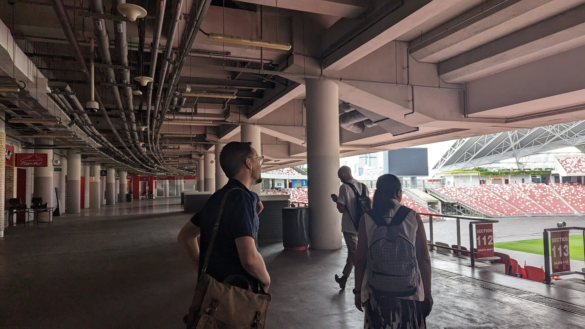
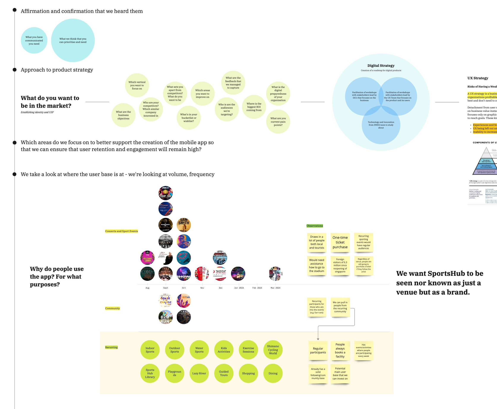
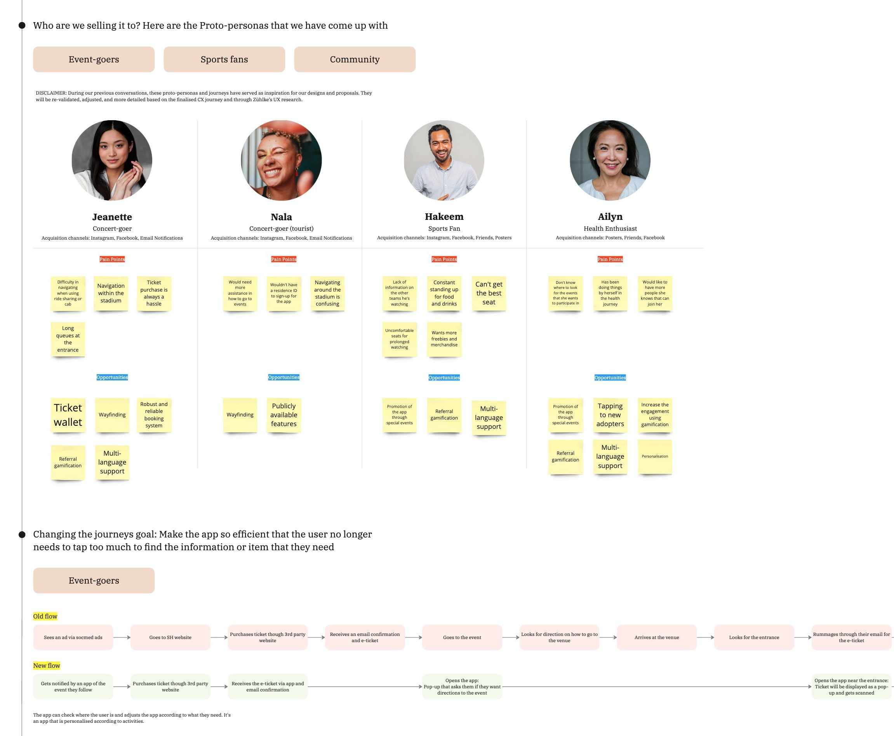
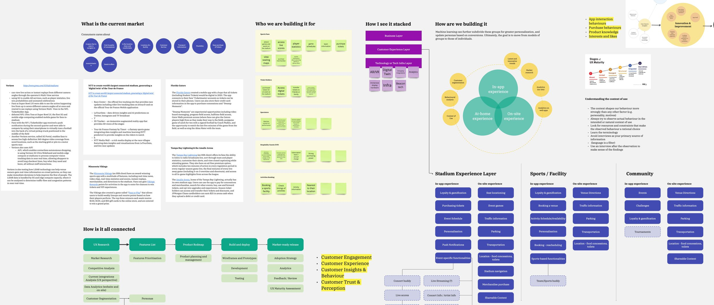
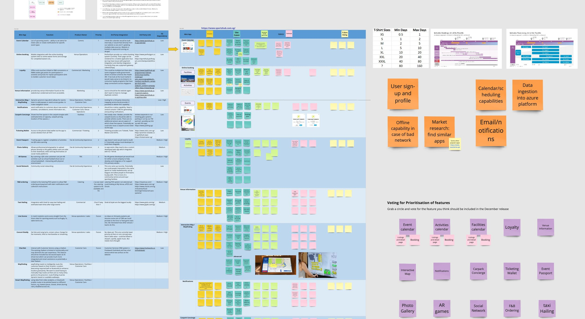
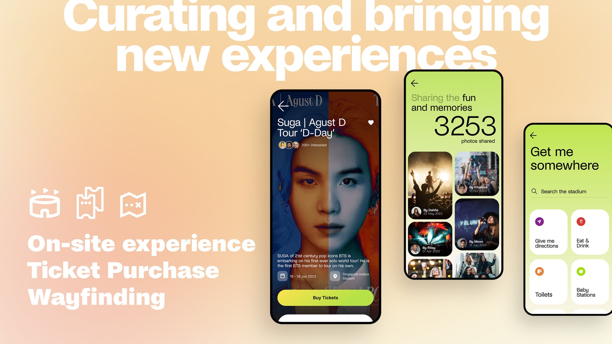
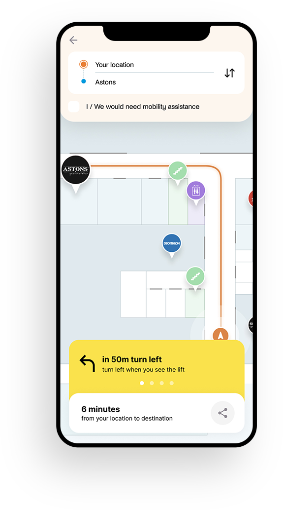
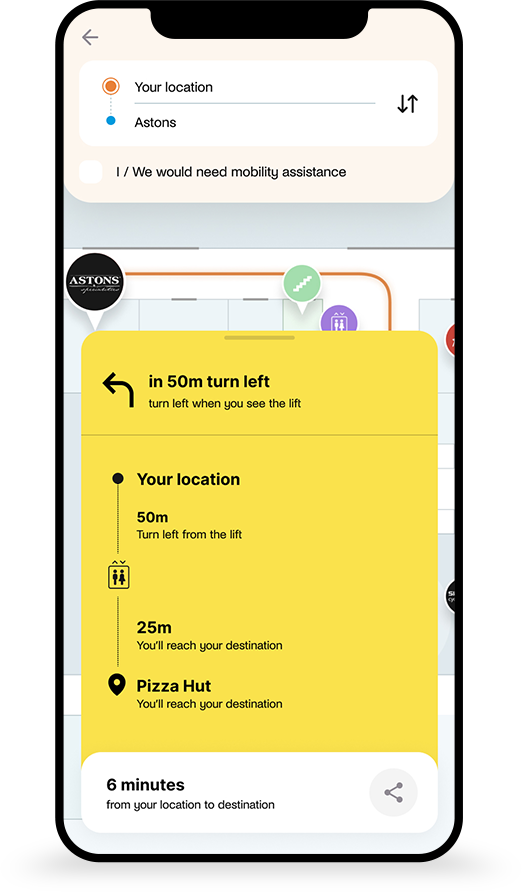
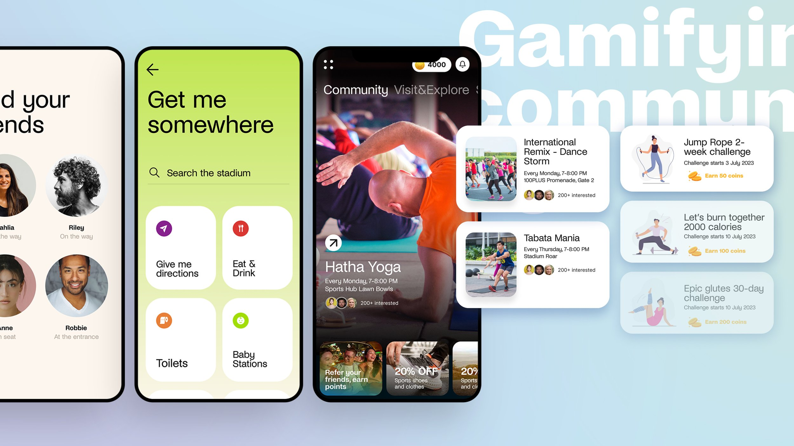
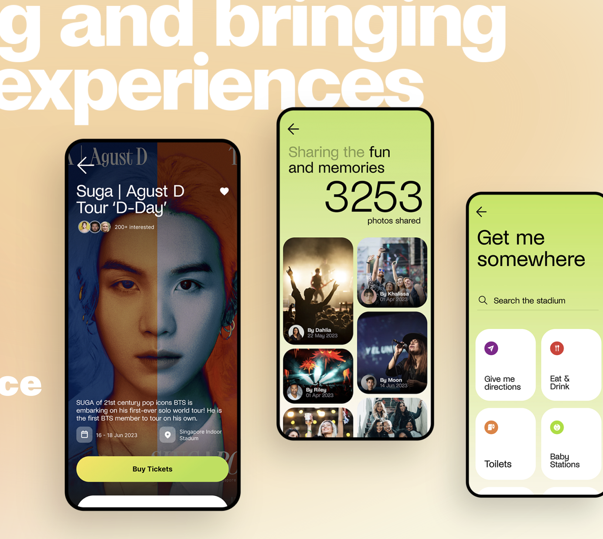

Working on the concert-goer experience at a major sports and entertainment venue, I was practising behavioural design without realising it — observing crowds, interviewing people mid-experience, designing spaces that guided behaviour. I only recognised the frameworks later.
The venue hosts some of the largest live events in Southeast Asia — concerts, sports, festivals — with tens of thousands of people moving through a complex physical and digital environment. The brief started with wayfinding: how do you get people where they need to go in a venue this size? But it quickly expanded into the full end-to-end event experience — from the moment someone discovers an event to the moment they leave the venue.
The challenge went beyond usability. People in a crowd — running late, overstimulated, excited — aren’t reading instructions. They’re reacting. Wayfinding was the entry point, but the real problem was understanding the full concert-goer journey and designing for how people actually behave in that environment.
At the time, I didn’t call any of this behavioural design. I was just trying to figure out what people actually do. It was only later, when I started learning the formal frameworks, that I realised I’d already been using them.
I worked on the concert-goer experience — the end-to-end journey from discovering an event to leaving the venue.
On-site observation, contextual interviews, behavioural mapping, crowd flow analysis
Persona development, journey mapping, decision-point mapping, environment audit
Wayfinding systems, information architecture, touchpoint design, spatial UX

On-site walkthrough — understanding how people move through the venue before designing anything
I didn’t learn these methods from a textbook. I just kept running into the same problems — people not reading signs, crowds bottlenecking in predictable places, first-timers and regulars behaving completely differently — and had to figure out ways to deal with them. It was only later that I realised each of those instincts had a name.
I spent time in the venue during live events — not in a lab, not sending surveys after the fact. I watched how people moved through the space: where they hesitated, where they followed others, where they ignored signage entirely.
What I called it then: “Just watching what people do.”
I didn’t wait until after the event to ask people what they thought. I spoke with concert-goers while they were navigating the experience — in queues, at decision points, when they were lost. Their answers in the moment were completely different from what they would have said the next day.
What I called it then: “Talking to people while they’re doing the thing.”
Not all concert-goers behave the same way. The first-timer who arrives two hours early and reads every sign is a completely different user from the regular who navigates on muscle memory. I built personas around decision-making patterns rather than demographics — how different people process information and make choices under pressure.
What I called it then: “Different people do this differently.”
The venue layout wasn’t neutral. Where you placed a food stall, how you oriented a barrier, which path was wider — all of it shaped where 55,000 people ended up. I mapped how the physical environment was making decisions for people, then redesigned those decision points so the default path was the right one.
What I called it then: “Making the obvious thing the right thing.”
You can’t put a 10-step instruction list in front of someone who’s about to see their favourite artist. Wayfinding had to work without being read — through spatial cues, visual hierarchy, and environmental design that guided people without them realising they were being guided.
What I called it then: “If they have to read it, we’ve already failed.”
People at live events are not making deliberate decisions. They’re operating on instinct, emotion, and whatever the environment puts in front of them. They follow the crowd. They go where it feels right. They don’t read signs — they read the room. So every design decision had to work for a brain that wasn’t really thinking.
What I called it then: “Nobody reads anything.”
The thing I kept coming back to was that we weren’t going to change how people behave in a crowd — we had to design around it. Nobody was going to start reading signs just because we made them bigger. The design had to meet people where they already were. That way of thinking stuck with me, and it’s basically how I approach every project now.

Mapping the product strategy — understanding event types, user segments, and what drives people to the venue

Proto-personas built around decision-making patterns, not demographics — with pain points and opportunities mapped for each

Research and ideation — competitive analysis, experience layers, and mapping how it all connects
This wasn’t a design-team-only project. The concert-goer experience cuts across operations, events, marketing, and technology — so the work had to involve all of them. I worked with cross-functional teams to understand how each group saw the problem and where their priorities overlapped or conflicted.
The CTO was a key stakeholder. Getting buy-in for a wayfinding POC meant translating observational research into language that made sense to leadership — showing where the current experience was breaking down, what it was costing, and what a redesigned approach could look like in practice.
Each team had a different view of the concert-goer experience. Operations cared about crowd flow and safety. Events cared about atmosphere. Marketing cared about the brand touchpoints. The research helped bridge those perspectives — when you show everyone the same behavioural data, it’s easier to align on what needs to change.
Observational research can feel abstract to someone who wasn’t there. I had to package the findings in a way that connected behavioural patterns to tangible outcomes — where people were getting stuck, where the experience was falling apart, and what the POC would test. That’s what got the CTO on board.

Cross-functional feature prioritisation — mapping research findings, voting on features, and aligning teams on what to build
The main output was a proof of concept for a redesigned wayfinding system — built on the behavioural research and tested against real event conditions. It moved from observation and mapping into something concrete that the venue could evaluate and build on.
The POC wasn’t based on assumptions about how people should navigate the venue. It was grounded in how they actually did — where they got lost, where they clustered, where the existing signage was being ignored. Every design decision in the POC traced back to something observed on-site.
The research gave the team a shared understanding of the problem. The POC gave them something to react to, test, and iterate on. It turned behavioural insights into a tangible starting point for improving the concert-goer experience.

The POC — on-site experience, ticket purchase, and wayfinding brought into a single app

Wayfinding in action — indoor map with turn-by-turn directions designed for System 1 thinking

Step-by-step directions using landmarks instead of abstract maps — “turn left when you see the lift”

Beyond wayfinding — community features, venue exploration, and gamified challenges to drive repeat engagement

The full experience — event discovery, shared memories, and “Get me somewhere” wayfinding
Surveys and interviews tell you what people think they do. Watching them tells you what they actually do. There’s almost always a gap, and that’s usually where the interesting problems are.
Someone filling out a form at home and someone navigating a venue with 55,000 others are not the same user, even if they’re the same person. Stress, time pressure, sensory overload, social influence — all of it changes how people take in information and make decisions.
In a venue, the physical space is the product. Where you place things, how you orient paths, what you make visible and what you hide — those carry the same weight as any screen layout.
I didn’t need to read about System 1 thinking to know that concert-goers weren’t reading signs. The practice came first. The theory came later and helped me explain what I was already doing.